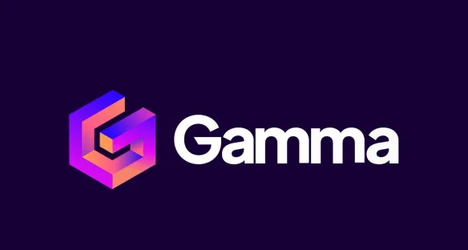
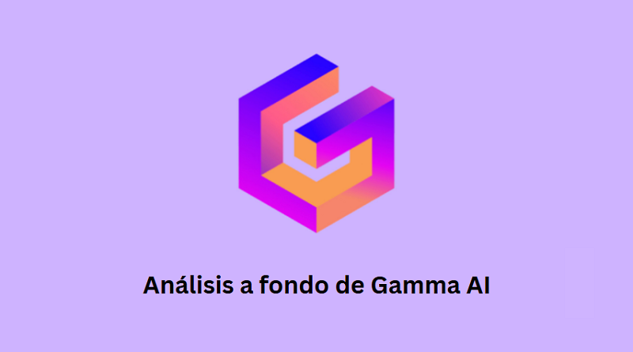

¿Qué es Gamma?
Gamma es un generador de contenido impulsado por IA que se enfoca en la productividad y el diseño. Su principal objetivo es ayudarte a pasar de una idea o un esquema a una presentación o documento pulido en minutos.
En esencia, funciona como una alternativa moderna y más visual a herramientas tradicionales como PowerPoint o Google Slides, pero con la automatización que ofrece la IA.
Gamma es una plataforma de presentación y generación de contenido mediante I.A. que facilita la creación de diapositivas y documentos visuales automáticamente.
 ¿Cómo funciona Gamma?
Permite introducir contenido o ideas y la I.A. organiza automáticamente diapositivas, diseño y formato profesional.
Ventajas y desventajas de aplicar Gamma
Ventajas: rapidez, diseño profesional, automatización. Desventajas: dependencia de la plataforma, creatividad limitada a plantillas.
¿Qué es un Napkin A.I.?
Napkin A.I. es una herramienta de visualización y síntesis de información mediante diagramas y presentaciones inteligentes generadas por I.A.
Consejos para usar Napkin A.I.
Ser claro con la información ingresada, organizar ideas antes de crear la presentación y revisar los resultados generados.
Descargar presentación: "Aplicación de la I.A."